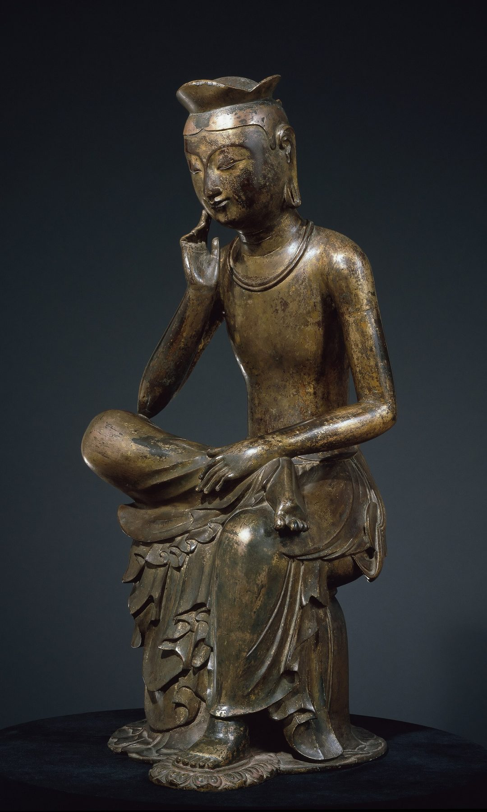
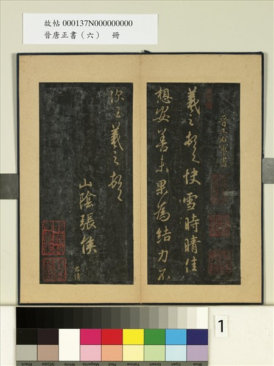

Ebrey on the appeal of Buddhism
“In a rough and tumultuous age, Buddhism offered an appealing emphasis on kindness, charity, the preservation of life, and the prospect of salvation.”
Ebrey & Walthall, Pre-Modern East Asia, p. 70.

One leg crosses the other. Fingers touch the cheek. A small crown rests above a nearly bare upper body.
The object is in Seoul today. Its precise original temple and kingdom are uncertain; “Korean” does not by itself establish “Silla.”
Compare Buddha and bodhisattva images ↓Mouzi belongs at the beginning of this story: the dialogue presents a late-Han setting. Its authorship and date are debated, so it has no precise marker here.

Open full-size timeline · Dates: Ebrey pp. 56–74; SCT pp. 427–429; SKT pp. 41–46; The Met: Wang Xizhi; Academy of Korean Studies: petition and Sui war. Wang’s lifespan follows the museum’s conventional dating. Dates align events; the lines do not imply causation.
Intentional action and its consequences.
The cycle of birth, death, and rebirth.
Liberation from craving and the cycle of rebirth.
Buddhist teaching travelled through people, translations, trade networks, and patronage. Political division is context for its growth, not its sole explanation.
“In a rough and tumultuous age, Buddhism offered an appealing emphasis on kindness, charity, the preservation of life, and the prospect of salvation.”
Ebrey & Walthall, Pre-Modern East Asia, p. 70.

An awakened one. This image wears a monastic robe.
Standing Buddha, ca. 3rd–4th century · The Met, 67.154.5. Public domain.
This image wears jewelry and princely dress. Maitreya is the Buddha of the future.
Standing Bodhisattva Maitreya, ca. 3rd century · The Met, 1991.75. Public domain.These objects help distinguish visual conventions. They are not portraits of Mouzi, Huiyuan, or Wŏn’gwang.
Background: Ebrey pp. 56–63; SCT editors, pp. 416–420.
The voice of a dialogue defending Buddhism against objections about the Classics, family duties, and foreign origins. The text presents a late-Han setting; its authorship and date remain debated.
Mouzi 牟子 is not Mozi 墨子, the earlier thinker studied in this course. Text and attribution.
Duties to parents and ancestors. The objections concern preserving the body received from parents and continuing the family line.
Becoming a monk or nun changes marriage, property, appearance, and family obligations.
“But now the monks shave their heads. How this violates the sayings of the sages and is out of keeping with the way of the filial!”
SCT p. 423. Oct 13 reader · p. 3
“Taibo cut his hair short and tattooed his body ... And yet Confucius praised him, saying that his might well be called the ultimate virtue.”
SCT p. 423. Oct 13 reader · p. 3
“Now of felicities there is none greater than the continuation of one’s line, of unfilial conduct there is none worse than childlessness.”
SCT pp. 423–424. Oct 13 reader · p. 3
“Boyi and Shuqi starved in Shouyang, but Confucius praised their worth. ... One does not hear of their being ill-spoken of because they were childless and propertyless.”
SCT p. 424. Oct 13 reader · p. 3
“The spirit never perishes. Only the body decays.”
SCT p. 424 · compare the editors on p. 416: no eternal Self or soul. Oct 13 reader · p. 3
SCT pp. 421–424. These are precedents in Mouzi’s argument, not evidence that those figures were Buddhists.
PRO: reasons to engage with foreign people, teachings, or practices. CON: reasons to resist. The sources address different actions: living among foreigners, learning from them, and adopting their dress.
“If a noble person dwells in their midst, what rudeness can there be among them?”
SCT p. 425; Analects 9.14, quoted by Mouzi. October 13 reader
“The barbarians with a ruler are not so good as the Chinese without one.”
SCT p. 425; Analects 3.5, quoted by the questioner. October 13 reader
Mouzi invokes Confucius’s proposed residence among the “nine barbarian nations.” This supports living among outsiders; it does not itself say that all customs are equally good. The CON quotation follows the assigned translation of a disputed Analects passage.
“What accords with rightness is to be followed, what heals the sick is good. The gentleman-scholar draws widely on all forms of good and thereby benefits his character.”
SCT pp. 421–422. October 13 reader
“I have heard of using what is Chinese to change what is barbarian, but I have never heard of using what is barbarian to change what is Chinese.”
SCT p. 425; Mengzi 3A4, quoted by the questioner. October 13 reader
“Clothes exist to be useful and manners respond to conditions.”
“The King of Zhao Convinces His Uncle to Wear Barbarian Dress,” Ebrey & Walthall, p. 25; trans. J. I. Crump, modified.
“But now the king would discard all this and wear the habit of foreign regions.”
Same passage, Ebrey & Walthall, p. 25.
The king connects Hu dress with mounted archery and border defense. His uncle initially treats the change as abandoning inherited civilization, then accepts the king’s argument.

334–416 · Mount Lu, southern China
A monk and community leader at Donglin Temple. His A Monk Does Not Bow Down Before a King dates to 404, during the controversy over Huan Xuan’s demand for monastic obeisance.
His distinction: householders follow ordinary family and political duties; monastics serve a religious purpose that warrants a different ritual status.
Biographical background · SCT pp. 427–429.
“Therefore they who rejoice in the way of Śākya invariably first serve their parents and respect their lords.”
SCT p. 427. Oct 13 reader · p. 4
“Kings and princes, though they have the power of preserving existence, cannot cause a preserved creature to be without woe. ... This is why the monk refuses homage to the Lord of the Myriad Chariots”
SCT pp. 428–429. Oct 13 reader · p. 4
The king associated with Silla’s official acceptance of Buddhism. The reading calls him Pŏpkong, his monastic name.
The court official whose execution and miraculous death mark the conversion account, dated 527.
The account survives in Kakhun’s Lives of Eminent Korean Monks (1215). Miracles are the narrative’s claims.
“In recent years the crops have been scarce, and the people are restless. Besides, because of frequent border raids from the neighboring state, our soldiers are still engaged in battle.”
SKT pp. 41–42. Oct 13 reader · p. 6
“Sacrificing his life in order to accomplish goodness is the great principle of the official.”
SKT p. 42. Oct 13 reader · p. 6
걸사표 乞師表
Requested by: King Chinp’yŏng of Silla.
Addressed to: the Sui court.
Purpose: military help against Koguryŏ.
The petition’s original wording does not survive. The passage below records the monk’s reply to his king, not the text sent to Sui.
Academy of Korean Studies: petition, dates, and lost text · Samguk sagi: the 608 entry.
Read Wŏn’gwang’s reply and lay commandments beside Laozi below ↓
“Weapons are inauspicious instruments, not the instruments of a cultivated person. But if given no other choice, the cultivated person will use them.”
Laozi 31, trans. Philip J. Ivanhoe, Readings in Classical Chinese Philosophy, 3rd ed., p. 187.
“To destroy others in order to preserve oneself is not the way of a monk. But since I, a poor monk, live in Your Majesty’s territory and waste Your Majesty’s clothes and food, I dare not disobey.”
SKT p. 45. Oct 13 reader · p. 7
Laozi allows the use of weapons when there is no other choice. Wŏn’gwang says destruction violates a monk’s way, but agrees to serve the king who sustains him.
“A military victory is not a thing of beauty. To beautify victory is to delight in the slaughter of human beings. ... When great numbers of people have been killed, one weeps for them in grief and sorrow. Military victory is associated with the rites of mourning.”
Laozi 31, trans. Philip J. Ivanhoe, p. 187.
“serve your sovereign with loyalty; attend your parents with filial piety; treat your friends with sincerity; do not retreat from a battlefield; be discriminating about the taking of life.”
SKT pp. 45–46. Oct 13 reader · p. 7
Even victory does not justify delight in killing. Laozi prescribes grief and mourning. Wŏn’gwang’s lay precepts combine battlefield loyalty with restraint in taking life; they do not prescribe withdrawal from war.
The first Laozi excerpt restores lines from the full assigned source that the compact reading omitted. The English quotations above retain Ivanhoe’s translation.
Seasonal restrictions on killing already appear in Warring States Chinese texts. They precede Buddhism’s establishment in China. Wŏn’gwang’s rule combines a spring–summer restriction with Buddhist fasting days.
“Nests should not be thrown down; unformed insects should not be killed, nor creatures in the Womb, nor very young creatures”
Liji (Book of Rites), “Yue Ling” (Monthly Ordinances), §10; trans. James Legge. Read the source
“Not to kill during the months of spring and summer nor during the six meatless feast days is to choose the time.”
SKT p. 46. October 13 reader · p. 7
Wangzhi (“The Regulations of a King”), chapter 9, bars nets and poisons from marshes while aquatic animals breed. It explicitly protects their growth and links seasonal restraint to plentiful resources.
Primary text · §22 · summary, not a quotation.
The first spring month’s ordinances prohibit destroying nests and killing unborn or young creatures. Fawns and eggs are protected too. Closely parallel wording appears in the Liji.
Text and parallel passages · Compilation date. Summary.
The reported teaching adds six Buddhist observance days to the seasonal rule. It also selects which creatures may be killed and discourages killing often.
SKT p. 46 · Samguk yusa translation, pp. 473–474, note 22. Summary.
The distinction: earlier Chinese rules protect reproduction and regulate taking animal life by season; Buddhist precepts supply a broader objection to killing. The resemblance is clear. Direct borrowing by Wŏn’gwang from a particular Chinese text is not established by these passages.
“Birthing season” is an explanation of the seasonal logic, not Wŏn’gwang’s wording in the assigned translation. His text says “spring and summer.” The account is preserved in later compilations, not a surviving contemporary transcript.
An aristocrat, official, and celebrated calligrapher. Ebrey describes copying his work as a way to train the hand. The example here is a later modelbook reproduction of Timely Clearing After Snowfall, not Wang’s original sheet.

快雪時晴 · Kuài xuě shí qíng
“Clearing after sudden snow.”
Select a character to locate it in the model.
The model uses running script (xíngshū): strokes vary and movement links their forms. The printed characters use modern sans-serif type.
Pen or pencil is enough for this comparison. A brush produces different changes in line width.
“in China the governments successfully claimed the authority to regulate Buddhist clergy and monastic establishments.”
Ebrey & Walthall, Pre-Modern East Asia, p. 72.